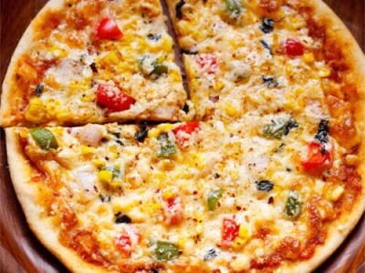

Cheese Pizza

Description
A very interesting appetizer pizza. Sounds strange, but everyone will love the unique combination of fragrant
pears and distinctive Gorgonzola.
Ingredients
- 1 (16 ounce) package refrigerated pizza crust dough
- 4 ounces sliced provolone cheese
- 1 Bosc pear, thinly sliced
- 2 ounces chopped walnuts
- 2 ½ ounces Gorgonzola cheese, crumbled
- 2 tablespoons chopped fresh chives
Steps
- Preheat oven to 450 degrees F (230 degrees C).
- Place pizza crust dough on a medium baking sheet. Layer with Provolone cheese. Top cheese with Bosc pear
slices. Sprinkle with walnuts and Gorgonzola cheese.
- Bake in the preheated oven 8 to 10 minutes, or until cheese is melted and crust is lightly browned. Remove
from heat. Top with chives and slice to serve.